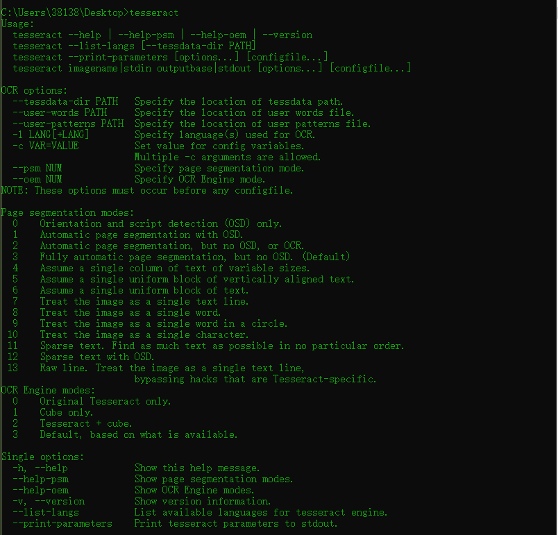
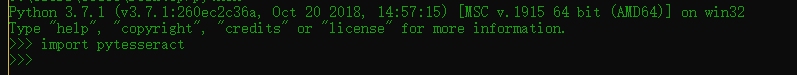

楔子 之前的爬虫总是被验证码卡住，无论是爬某数据，还是爆破某东西，有了验证码貌似就GG,发现了一个不错的库很简答的识别简单的验证码，就是安装不能直接pip安装
一、win10安装tesseract Github地址 ,找了半天没找到在哪下win10安装包，orz备用一个下载地址 ，下载一个就行比如tesseract-ocr-setup-3.05.01.exe，然后安装\tesseract\Tesseract-OCR,在终端输入tesseract为↓

二、安装python相关的包 1 2 pip install pytesseract pip install pillow
有个很恶心的地方，感觉之前的crypto包也有类似的问题\python3\Lib\site-packages\pytesseract中的pytesseract.py第三十五行
1 2 3 tesseract_cmd = '{你自己tesseract安装的目录}' 比如我的↓ tesseract_cmd = 'C:/tesseract/Tesseract-OCR/tesseract'

三、简单介绍一下验证码种类 1）图形验证码
三、最简单的车 这是最简单的一类验证码
1 2 3 4 5 6 from PIL import Imagefrom pytesseract import *im = Image.open ('1.jpg' ) print(pytesseract.image_to_string(im));
四、优化程序，排除干扰 很多地方的验证码是有干扰的比如中间多一根横线，比如某教务处
1 2 3 4 5 6 7 8 9 10 11 12 13 14 15 16 17 18 19 from pytesseract import *from PIL import Imageimage = Image.open ("4.jpg" ) image = image.convert('L' ) threshold = 127 table = [] for i in range (256 ): if i < threshold: table.append(0 ) else : table.append(1 ) image = image.point(table,'1' ) result = pytesseract.image_to_string(image) print(result)
很可惜上面脚本上不了教务处
1 2 3 4 5 6 7 8 9 10 11 12 13 14 15 16 17 18 19 20 21 22 23 24 25 26 27 28 29 30 31 32 33 34 35 36 37 38 39 40 41 42 43 44 45 46 47 48 49 50 51 52 53 54 55 56 57 58 59 60 61 62 63 64 65 66 67 68 69 70 71 72 73 74 75 76 77 78 79 80 81 82 83 84 85 86 87 88 89 90 91 92 93 94 95 96 97 import osimport pytesseractfrom PIL import Imagefrom collections import defaultdictdef get_threshold (image ): pixel_dict = defaultdict(int ) rows, cols = image.size for i in range (rows): for j in range (cols): pixel = image.getpixel((i, j)) pixel_dict[pixel] += 1 count_max = max (pixel_dict.values()) pixel_dict_reverse = {v:k for k,v in pixel_dict.items()} threshold = pixel_dict_reverse[count_max] return threshold def get_bin_table (threshold ): table = [] for i in range (256 ): rate = 0.1 if threshold*(1 -rate)<= i <= threshold*(1 +rate): table.append(1 ) else : table.append(0 ) return table def cut_noise (image ): rows, cols = image.size change_pos = [] for i in range (1 , rows-1 ): for j in range (1 , cols-1 ): pixel_set = [] for m in range (i-1 , i+2 ): for n in range (j-1 , j+2 ): if image.getpixel((m, n)) != 1 : pixel_set.append(image.getpixel((m, n))) if len (pixel_set) <= 4 : change_pos.append((i,j)) for pos in change_pos: image.putpixel(pos, 1 ) return image def OCR_lmj (img_path ): image = Image.open (img_path) imgry = image.convert('L' ) max_pixel = get_threshold(imgry) table = get_bin_table(threshold=max_pixel) out = imgry.point(table, '1' ) out = cut_noise(out) text = pytesseract.image_to_string(out) exclude_char_list = ' .:\\|\'\"?![],()~@#$%^&*_+-={};<>/¥' text = '' .join([x for x in text if x not in exclude_char_list]) print(text) return text OCR_lmj("2.jpg" )